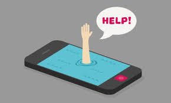

Que Uso Da El Celular:
Una de las mayores comunidades online en español, presentó un informe sobre los usos de los teléfonos celulares, basado en una encuesta multiple choice, que se realizó durante diez días y con la participación de más de 3.500 visitantes.
Ésta reveló que el principal uso que le dan a los celulares es el envío mensajes de texto (votado por el 76% de los encuestados), seguido de cerca por la aplicación originaria de los dispositivos, hablar por teléfono (74%).
Según el informe, más de la mitad de los usuarios comienzan el día con su teléfono, ya que el 56% lo usa como despertador. Después aparecen las características multimedia de los equipos más modernos: el 43% lo usa para sacar fotos, y un 40% escucha música en ellos.
Una de las utilidades de mayor crecimiento entre los consumidores más jóvenes, la opción para jugar, ocupa el séptimo puesto en la encuesta. Otras aplicaciones muy promocionadas no son tan utilizadas: apenas un 9% los usa para navegar, un 8,7% para chatear, y un 8,5% para revisar su mail.
Los Buenos Usos Del Celular:
1.- Optimizan el proceso de aprendizaje:
Actualmente existen algunas aplicaciones que se han utilizado para la educación, por ejemplo aprender otros idiomas.
2.- Monitorizar actividades y estados de salud de las personas:
Se puede mejorar la cognición en algunos pacientes que sufren alteraciones de memoria y atención, en otros casos ayudan a mantener contacto con las personas que requieren una evaluación constante.
3.- Economizar tiempos:
Hoy los traslados son cada vez mayores, el uso de los dispositivos móviles ha ayudado a acortar distancias y realizar ciertas tareas. Por ejemplo, adquirir en línea productos de uso diario como son los alimentos o medicamentos.
4.- Herramienta en el ámbito laboral:
El celular ha ayudado dentro de las oficinas, las personas ya no necesitan un teléfono fijo y estar presentes en su lugar de trabajo para realizar sus negocios, donde se encuentren el celular está a la mano.
5.- Aplicaciones para medir y mejorar estado mental de las personas:
Algunas aplicaciones miden el estado de ánimo en el día a día e incluso ayudan a realizar una relajación profunda.
Los Malos Usos De Celular
1.- El uso del celular afecta el estado de ánimo:
Por el contrario, también es posible que debido al uso desmedido del celular, generalmente al pasar mucho más tiempo en redes sociales, se presenten síntomas depresivos.
No se ha confirmado al 100 por ciento si existe realmente un problema con el estado de ánimo, pero sí se ha sugerido que está relacionado con el número de horas que pasa un individuo frente a la pantalla del celular, el uso constante de las redes sociales, así como el contenido de los mensajes: discriminación, devaluación y jugar a ser otra persona. Esto los pone en una situación de juzgarse a uno mismo según como la sociedad lo haga. “Es un fenómeno descrito no sólo como biológico, sino especialmente como social y cultural”.
2.- El uso del celular en situaciones no adecuadas:
Manejar un auto y a la vez revisar el dispositivo móvil ha provocado accidentes trágicos. Por tal motivo, se han llevado a cabo diversas campañas para que las personas no usen el celular mientas manejan.
También destacan situaciones que no son aptas para el uso del móvil, como en un evento importante, y que rompe los límites del respeto.
3.- El uso de dispositivos móviles en los niños:
De acuerdo con el especialista no se recomienda que los pequeños de dos años utilicen el celular y una vez expuestos que sea de forma gradual. Los celulares limitan ciertas capacidades que deben aprenderse de forma personal, como el lenguaje.
4.- Ansiedad por no usar el dispositivo:
Olvidar el celular causa ansiedad y se da un fenómeno de abstinencia por no tenerlo en la mano. De hecho, existen algunos estudios que plantean cómo medir esta ansiedad, por ejemplo: cuántos mensajes y llamadas se realizan en un día, o cuántas veces se revisa la pantalla.
5.- Evitar comunicación sincrónica:
Algunos individuos se les dificulta bastante la comunicación interpersonal y prefieren hacerlo por medio de mensajes electrónicos y redes sociales. No obstante, esto reducirá aún más su capacidad de comunicación interpersonal.
